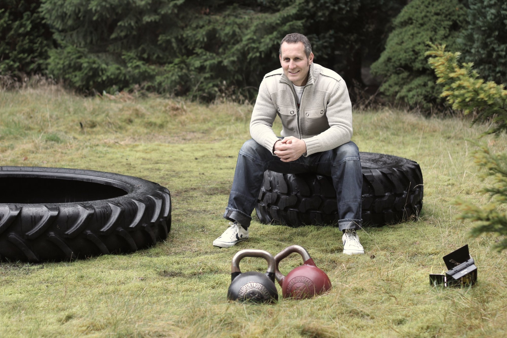
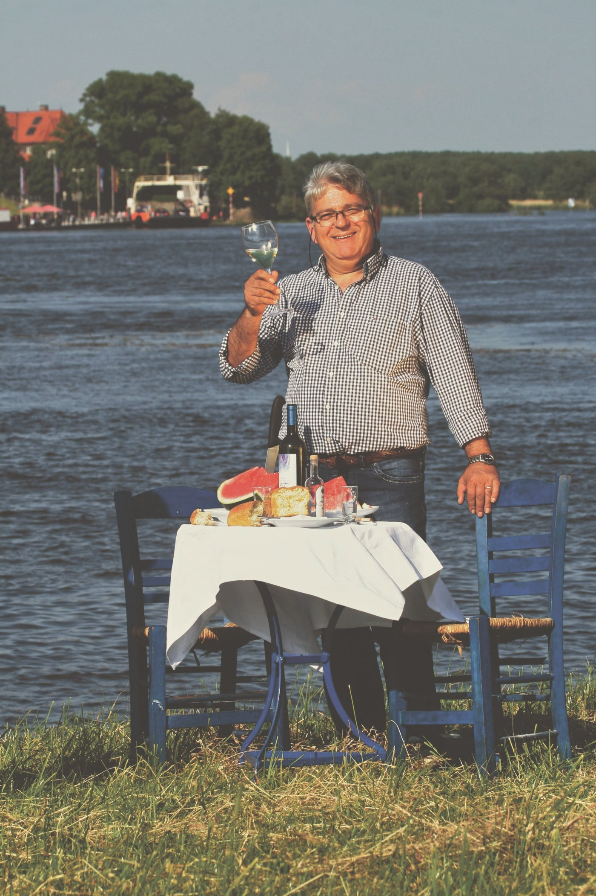

Die Person. Reihe: Die Gesichter.
Nach dem Dorffest ist vor dem Dorffest
Timo Brand, Platzmeister, Hittfeld
Seit 25 Jahren baut Timo Brand den Festplatz auf. Für ihn beginnt das Dorffest schon im Oktober des Vorjahres.
Wenn am Dorffest-Wochenende in Hittfeld die Stände aufgebaut, Kabel verlegt und Buden ausgerichtet werden, dann ist einer immer mittendrin: Timo Brand. Seit 25 Jahren ist er für den Aufbau des Festplatzes verantwortlich, eine Aufgabe, die weit mehr umfasst, als nur Tische und Bänke zu stellen. Veranstalter des Dorffestes ist der Gewerbeverein Hittfeld, in dem Timo als 2. Vorsitzender aktiv ist.
„Für mich beginnt das Dorffest eigentlich schon im Oktober des Vorjahres“, erzählt Timo. „Nach dem Dorffest ist vor dem Dorffest. Dann starten Ausschreibungen, Absprachen mit Lieferanten und die gesamte Logistik.“ Die ersten Stände rollen bereits am Mittwoch vor dem Fest an, die großen Bauten stehen dann Donnerstag, bevor am Freitagmittag um 12 Uhr die Platzabnahme erfolgt. „Ab da klingelt mein Telefon gefühlt alle zehn Minuten.“
Wenn das Wetter nicht mitspielt
„Einmal hat es in der Woche vor dem Dorffest geschüttet wie aus Eimern. Die Wiese fürs Kinderspielparadies war völlig aufgeweicht, Fahrzeuge sanken 35 Zentimeter tief ein. Innerhalb kürzester Zeit waren Landwirte aus der Umgebung zur Stelle, mit Treckern, Holzschnitzeln und jeder Menge Tatkraft. Das war gelebter Zusammenhalt.“
Nach dem Dorffest ist vor dem Dorffest.
Familiengeschichte
Die Dorffestleidenschaft liegt bei Timo in der Familie. Sein Opa war eines der acht Gründungsmitglieder des Gewerbevereins. „Er kam aus Köln, meine Oma aus der Eifel. Direkt nach dem Krieg fuhr er 80 Kilometer mit dem Mofa nach Gerolstein, um auf eine Kirmes zu gehen. Dort lernte er meine Oma kennen. Seine Idee für das Dorffest war, dass auch Kinder und Enkelkinder die Chance haben, hier vielleicht ihren Lebenspartner zu treffen.“

Nächste Story, Der Moment.